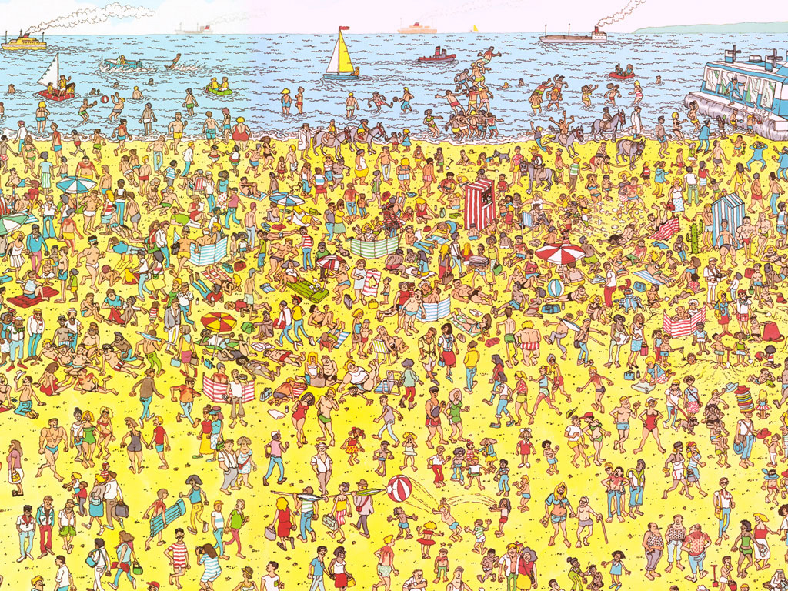

|  |
Ce projet a pour but de vous faire faire une incursion dans le domaine de la vision par ordinateur. Il sera réalisé par groupes de deux personnes (il est possible de le faire seul si vous le souhaitez).
Nous ne vous demandons pas de vous inscrire au préalable mais prendrons acte des groupes formés au moment du rendu.
Le rendu est fixé au Lundi 13 Novembre 13h00. Les instructions pour le rendu vous seront communiquées en temps voulu.
Le portail du rendu sera ouvert :
Commencez par prendre connaissance de l'énoncé complet [Lien].
Une partie du matériel est fournie : charlie.zip
Pour créer un projet Eclipse à partie de cette archive procédez comme suit :
L'énoncé vous indique quel fichier compléter et comment.
Il y a quatre étapes à compléter pour la réalisation de ce mini-projet. La grille ci-dessous vous donne la répartition des points par étape.
| points | Maximum possible sur 6 | |
|---|---|---|
| Etape 1 Représentation d'images |
10 | 1.5 |
| Etape 2 Distances entre images |
30 | 3 |
| Etape 3 Localisation du motif |
20 | 4 |
| Etape 4 Corrélations croisées |
40 | 6 |
Le projet est un élément noté. L'échange d'idée entre groupes ou avec des tiers est autorisée et même recommandée. Par contre, l'échange de code est strictement interdit ! Le plagiat de code, qui sera contrôlé, sera considéré comme de la tricherie.
En cas de tricherie, vous recevrez la note «NA» (voir également l'ordonnance sur la discipline).
Dans tous les cas, il est fortement conseillé de pouvoir expliquer les lignes de code de son projet.